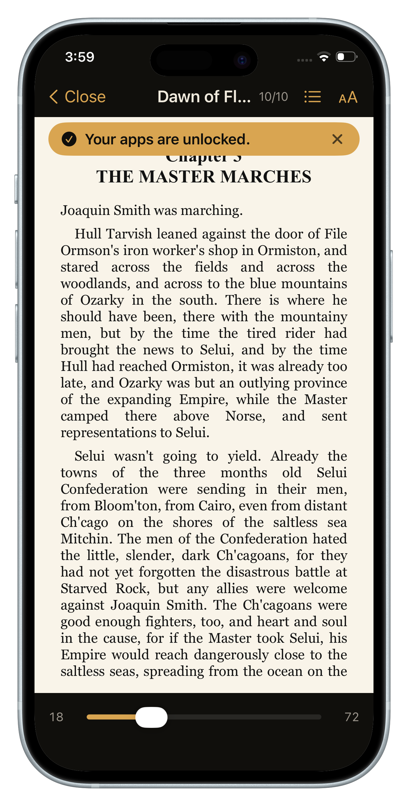

Why the nuclear option keeps failing
Deleting apps feels decisive, but it fights the wrong battle. The apps aren't the habit — the reach is the habit. Thirty times a day your hand finds the phone before your brain votes. Delete Instagram and the reach survives; it just lands on Safari, YouTube, your email, or the App Store's reinstall button.
And there's a social cost: group chats, event invites, the account you actually need for work. So you reinstall, feel defeated, and scroll harder. The cycle isn't evidence that you're weak — it's evidence that abstinence is the wrong tool for something woven into daily life.
Friction: the middle path that works
Behavioral economists have a name for what actually moves usage numbers: friction. Make a behavior slightly harder and its frequency collapses — no ban required. It works in both directions: every extra step between you and the feed cuts sessions; every step removed adds them.
But there's a catch most screen-time apps miss: friction that gives you nothing in exchange feels like punishment, and you'll eventually route around punishment. The friction that survives long-term is friction that pays you.
Don't make the phone useless. Make the first thing it offers something you're proud of.
A screen-time plan you'll still run in three months
- Find your two heaviest apps. Check Settings → Screen Time. Don't block ten things — block the two that own 80% of your wasted hours.
- Put a toll on them, not a wall. The unlock should be a small, positive act. A few pages of a book is the ideal toll: it fills the restless moment that made you reach, and it compounds into something (finished books) instead of nothing.
- Set the toll laughably low. Two to five pages. The goal isn't to read a lot today — it's to make the system survive until reading a lot happens on its own.
- Track time won, not time lost. Watching "pages read" and "apps blocked" grow feels like winning. Watching a screen-time graph shrink feels like dieting. Pick the scoreboard that keeps you playing.
How to set this up with Block&Read
Block&Read runs this entire plan automatically:
- Pick your two worst apps (free plan) — Instagram and TikTok are the usual suspects. Premium blocks unlimited apps and adds schedules.
- Set a daily goal of a few pages. Reach for a blocked app and your book opens instead; hit the goal and everything unlocks for the day.
- Watch the right scoreboard: streak, pages read, time won back — your Stats screen turns reduced screen time into visible progress.
- No accounts, no tracking: your usage data never leaves your phone.
